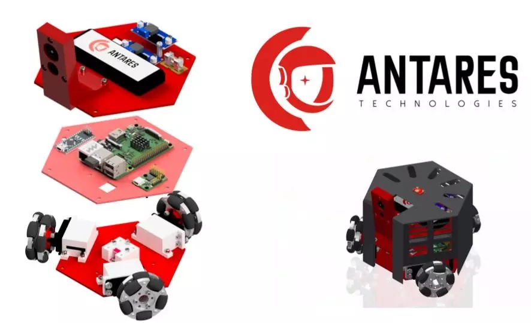
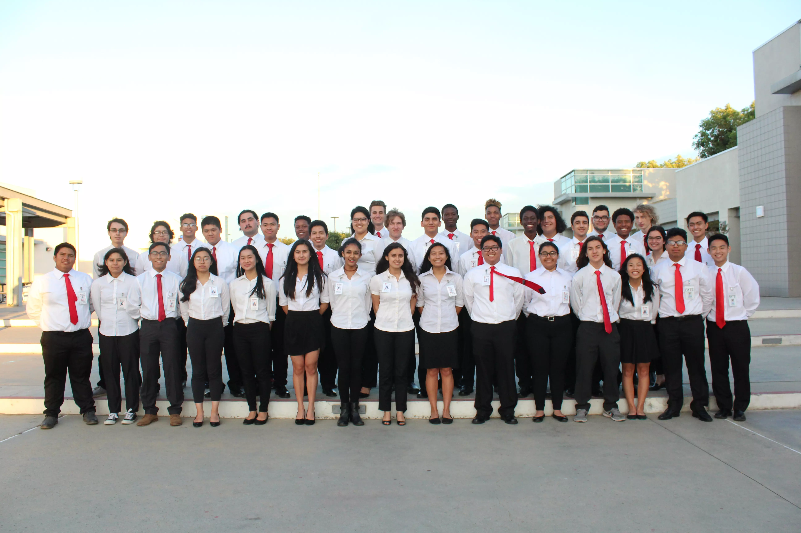

My high school capstone took the form of an intensive year-long research project and company simulation. I was the team lead and primary project manager of "Antares Technologies," where I led 30 students with different technical backgrounds through building "Groundbots" — modular swarm robots designed to navigate extreme terrain.
Swarm Robots - Antares Technologies


As project manager, I enjoyed utilizing different organization-level methods for creating cohesive team environments. I learned how to create ideation sessions that were conducive to students' imaginations and creativity. While not coordinating, I acted as a floating resource, helping subteams and team members work through technical challenges.

Looing back from my third year of college, I'm grateful that my formative experience in engineerng was one where I got to experice all aspects of a project from start to finish— not just designing a single mechanical component or circuit board, but seeing how all the moving parts fit together.